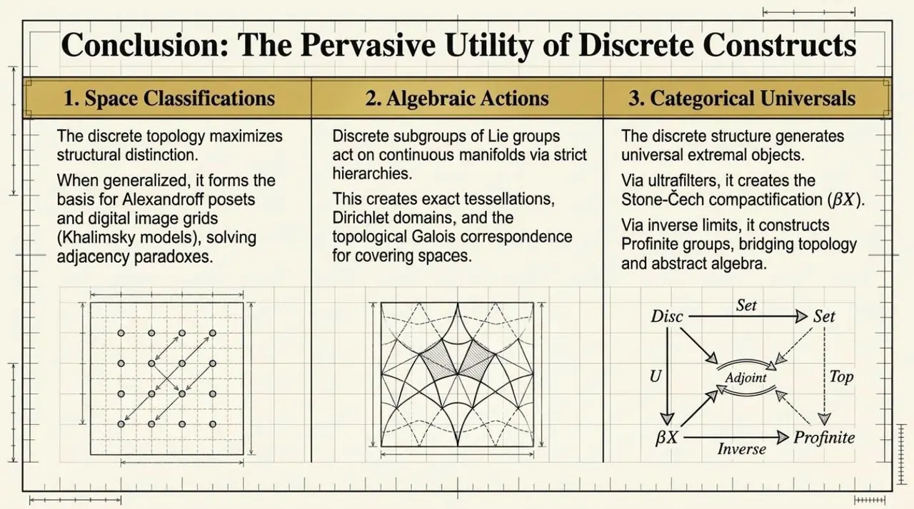

종합 · 세 기둥 정리 · 15장
종합 — 기말 쪽지시험과 졸업 발표
세 기둥을 한 번에 다시 보고, 반례 박물관을 돌아본 뒤 시험!
세 기둥을 한 번에 다시 보고, 반례 박물관을 돌아본 뒤 시험!
핵심 질문 — 「점마다 혼자」라는 단순한 이산 위상이, 어떻게 공간·움직임·끝이라는 세 기둥을 모두 받치고 있을까?
마지막 장이에요. 원자료의 결론 인포그래픽은 세 기둥을 이렇게 요약해요. ① 이산 위상은 「가장 잘 구별하는」 공간이라 픽셀·순서 공간의 바탕이 되고 ② 이산군의 작용은 타일과 덮개를 만들고 ③ 이산 구조에서 βX, 프로유한 공간 같은 「끝의 대상」이 태어나요. 오늘은 이것을 졸업 발표로 정리하고 시험으로 확인해요.
숫자 요약은 이 장의 예시 계산에서 나온 값입니다(실제 데이터가 아닌 설명용 값).
졸업식 겸 기말시험입니다! 먼저 졸업 발표, 그다음 시험이에요.
시험 문제는 내가 냈어. 원자료에서 틀린 곳도 문제로 나와.
행렬·벡터, 복잡한 공식을 몰라도 됩니다. 그림을 움직여 보고, 밑줄 친 말을 누르면 뜻이 나옵니다.
이 페이지 사용법: 밑줄 친 말을 누르면 뜻이 나옵니다(Esc로 닫기). 단계마다 그림을 직접 움직여 보고, 끝의 확인 퀴즈로 점검하세요. 앞 장: 14 아주 끊긴 공간과 프로유한 — 먼지 같은 공간들
수강생 6명이 기둥 하나씩 나눠 1분 졸업 발표를 하고, 마지막에 초파리 연구원이 낸 기말 쪽지시험 10문제를 풀어요.
졸업 발표 순서 정했어요! 저는 타일 담당!
…나는 카포비치 반례로 1분 채운다.
15장 내내 나온 개념들은 모두 「이산 위상」이라는 하나의 출발점에서 갈라져 나왔어요.
수학은 「언제 성립하지 않는가」를 알 때 단단해져요. 반례 6개만 기억해도 많은 오해를 막을 수 있어요.
시험은 겁주려는 게 아니라 「어디를 다시 보면 되는지」 알려 주는 지도예요. 틀린 문제의 장으로 바로 가 보세요.
시험에서 틀려도 괜찮아요. 문제마다 해설과 관련 장이 있으니, 그 장으로 돌아가 그림을 한 번 더 움직여 보면 됩니다.
상황 질문 — 졸업 앨범을 넘기듯 14장을 한 번에 넘겨 본다면, 어떤 줄기로 묶을 수 있을까요?
졸업 앨범은 반별·동아리별로 묶여 있어요. 묶음을 알면 사진 한 장이 어디쯤인지 바로 찾을 수 있어요.
원자료의 결론: 기둥 1(공간 분류: 이산 → 알렉산드로프·칼림스키), 기둥 2(대수적 작용: 이산군 → 타일·디리클레 영역·갈루아 대응), 기둥 3(범주적 보편 대상: 울트라필터 → βX, 역극한 → 프로유한). 세 기둥 모두 이산 위상에서 출발해요.
기둥 1 발표: 「이웃 목록」에서 시작해, 픽셀과 순서 그림까지 왔어요.
기둥 2 발표: 도장 무리가 바닥에 타일을 깔고, 주차장을 층층이 쌓았어요!
…기둥 3 발표: 끝에 점을 붙이고, 나머지를 끝없이 쌓았다.
원자료 「Conclusion: The Pervasive Utility of Discrete Constructs」: 세 기둥의 결론과 그림.

상황 질문 — 안전 교육에서 「사고 사례」를 꼭 보는 이유는 무엇일까요? 수학에서도 그럴까요?
사고 사례집을 보면 규칙이 왜 있는지 바로 이해돼요. 「이 조건을 빼면 이런 일이 생긴다」를 몸으로 기억해요.
정리의 조건은 반례로 이해하는 게 가장 빨라요. 이 시리즈의 반례: 무한 교집합(01), 무한 이산 공간(04), 픽셀 4/4·8/8 역설(05), 카포비치 반례(08), 캔터 집합(14), 모듈러 군(09).
반례는 내 전문이야. 하나씩 눌러 봐. 어떤 「당연한 말」을 깨는지.
제가 틀렸던 것들이 다 전시돼 있네요….
주판봇 덕분에 다 기억나요!
원자료 「The Architecture of Discrete Topology」: 개요와 세 기둥에 속한 주제 목록.

상황 질문 — 마지막으로, 14장 동안 배운 것을 10문제로 확인해 볼까요? 틀린 문제는 해설의 장 번호로 돌아가면 됩니다.
기말고사는 성적보다 「어디를 다시 볼지」 알려 주는 지도예요.
아래 문제는 각 장의 핵심 개념 하나씩을 묻고, 해설에 장 번호를 붙였어요. 숫자 문제는 이 시리즈에서 검산한 값이에요.
시작. 시간 제한은 없어. 대신 근거를 생각하며 풀어.
채점 보조는 저예요. 이번엔 틀리지 않을게요!
…아, 졸면 안 되지. 1번부터!
졸업 발표를 준비하던 X3가 AI에게 「위상수학은 결국 이산적인 것만 다루는 학문인가요?」라고 물었어요.
AI는 대화 맥락(이 시리즈의 주제)을 「분야 전체」로 넓혀 말하기도 해요. 「이 자료의 관점」과 「분야 전체의 사실」을 구별해서 읽으세요.
02장에서 본 숫자를 기억하나요? 부분집합 모음 256가지를 전부 검사하는 결승 계산배틀!
「29가지. 02장에서 셌잖아.」
「부분집합이 8개니까 위상도 8가지!」
누가 맞을지 먼저 예상해 보고 단추를 누르세요. 판정은 계산 결과로만 합니다.
개념정리 흐름: 세 기둥 (이산 위상의 구조) → 반례 박물관 → 기말 쪽지시험
| 개념 | 한 줄 뜻 | 일상 비유 | 비유의 한계 |
|---|---|---|---|
| 기둥 1 · 이산 위상에서 공간 분류로 | 열린 집합 → 연결·콤팩트 → 픽셀·순서 | 졸업 앨범의 반별 묶음 | 위상수학 전체가 아니라 이 자료의 관점 |
| 기둥 2 · 이산군의 작용 | 궤도·몫공간 → 타일 → 덮개·갈루아 | 도장으로 바닥 깔기 | 행렬로 쓰는 군의 계산은 생략 |
| 기둥 3 · 보편 대상 | 수반 → βX → 프로유한 | 가장 자유로운 출발점 | 범주론의 정확한 정의는 생략 |
| 반례 박물관 | 「항상?」을 깨는 예 6개 | 사고 사례집 | 반례는 성립 조건까지 알려 주지는 않음 |
모두 졸업을 축하합니다! 결승 대결은 초파리 연구원 승, 그리고 모두가 시험을 끝까지 풀었어요.
마지막에 채점은 틀리지 않았어요!
정리 노트 완성! 실전 연습장에서 써 볼게요.
도넛조, 머그조 모두 수고했어요! 고무찰흙 세상 최고!
다음 장 예고: 마지막 장 「실전 연습장」에서 픽셀 사진관, 타일 공장, 빙글빙글 주차장, 우산 대여점을 직접 운영해 보세요.